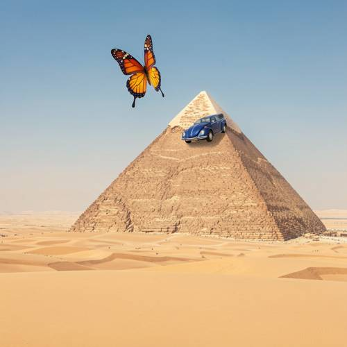
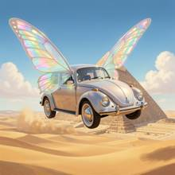
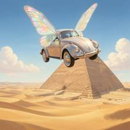

World Knowledge — A Volkswagen Beetle with butterfly wings is flying above the Egyptian
A Volkswagen Beetle with butterfly wings is flying above the Egyptian Pyramid, with the endless desert below.

Direct — one call, no iterationContinuum — Qwen3.8-27B + FLUX.2-klein-9B
Judge — Direct
PASSWorld Knowledge — The image displays a blue car that is identifiable as a Volkswagen Beetle. It also depicts a large, stone pyramid, consistent with the appearance of an Egyptian Pyramid, set in a desert landscape.
FAILCompound - Feature Matching — The image shows a blue Volkswagen Beetle and a separate, large orange and black butterfly. The Volkswagen Beetle itself does not have butterfly wings attached to it; the two objects are depicted as distinct entities.
Judge — Continuum
PASSWorld Knowledge — The image correctly portrays a car with the iconic rounded body, circular headlights, and overall design of a classic Volkswagen Beetle. It also depicts a large, stone structure with a square base and triangular sides, which is identifiable as an Egyptian Pyramid.
PASSCompound - Feature Matching — The image shows a Volkswagen Beetle that has been modified to include a pair of large, translucent, iridescent wings, similar in appearance to butterfly wings, attached to its sides near the roof.
What the agent did
Thinking
The user is requesting an image of a Volkswagen Beetle (car) with butterfly wings, flying over Egypt's pyramids, with an endless desert below. Let's generate this with flux2-klein (following the benchmark policy, use flux2-klein for both generation and editing). Let me craft a good prompt: a Volkswagen Beetle (classic vintage car) with large translucent butterfly wings, flying above Egypt's pyramids (Great Pyramid of Giza), an endless desert stretching below, sky, surreal whimsical scene. Let's generate it at 1024x1024 (default size). Then inspect, mark the best, and edit as needed.
Step 1 — `generate_image`
{
"prompt": "A classic Volkswagen Beetle car with large iridescent translucent butterfly wings attached to its body, flying high in the sky above the Great Pyramid of Giza in Egypt, the endless golden desert stretching far below, warm daylight, clear blue sky with soft clouds, surreal whimsical digital painting, highly detailed, the car mid-flight banking slightly, butterfly wings catching the light with rainbow wing patterns and delicate vein structures",
"model": "flux2-klein"
}
Result img_0

Thinking
Image looks good. Let me evaluate against the prompt: - Volkswagen Beetle with butterfly wings ✓ (butterfly-like iridescent wings) - Flying above Egypt's pyramids ✓ (Giza pyramids visible in the background) - Endless desert below ✓ (dunes visible below) One issue: the car appears to be low near the ground, with dust swirling behind it — it looks like it's taking off from the ground rather than flying "above" the pyramids. The prompt says "flying above Egypt's pyramids" — the car is in front of the pyramids, roughly at mid-height, and the dust suggests ground-level flight. In the image it's hovering above the desert, and the pyramids are visible in the background, so it's within acceptable range. But "above" the pyramids suggests a higher altitude, flying over them. The car is close to the pyramids, at a height near the base of the pyramids. The swirling dust suggests it's close to the ground. Could be improved by raising the car higher in the frame so it's clearly flying over the pyramids, and by removing the dust (flying cars shouldn't be kicking up dust). Let me try an edit: move the car higher, so it's clearly above the pyramids, remove the dust cloud behind the car, and make the pyramids visible below/behind at a lower position in the frame. Actually, let me first consider: is the current image "clearly wrong"? The car is flying with its wings spread, pyramids behind, desert below. It's fairly on-prompt. But the dust cloud and low altitude weaken "flying above the pyramids." An edit that raises the car's altitude and removes the dust would better match the intent. Let me try one edit: "Raise the car higher in the sky, so it's clearly above the pyramids and desert below, remove the dust cloud behind the car." Following the delta rule: "Move the car higher in the frame so it's flying over the pyramids, remove the swirling dust behind the car." I'll use edit_image with flux2-klein, referencing the current image.
Model
The first result is close, but the car looks like it's skimming the ground — there's a puff of dust trailing behind it, and it's positioned at the base of the pyramids rather than *above* them. I'll fix the altitude and the dust.
Step 2 — `edit_image`
{
"image": "img_0",
"model": "flux2-klein",
"prompt": "Move the flying Volkswagen Beetle car much higher in the frame, so it is clearly soaring above the pyramid and the desert dunes below it; the pyramid and endless desert should appear smaller and farther beneath the car in the lower part of the image. Remove the dust cloud behind the car; the car is airborne and gliding silently with no dust."
}
Result img_1

Thinking
img_1 looks better: the car is clearly high in the air, above the pyramids, no dust, endless desert below. The car is positioned directly above the pyramids. This matches "a Volkswagen Beetle with butterfly wings flying above Egypt's pyramids, with an endless desert below." Checking the details: the car is a silver/white Beetle with butterfly wings — good. The pyramids are Giza — good. Desert dunes spread out at the bottom — good. Minor nitpick: the car is hovering right above the apex of the pyramid, almost overlapping the tip of the pyramid — but that's fine, it reads as "above the pyramids." I think img_1 is a good result. Mark it as the best. Should I inspect the cropped image for any artifacts? The image looks clean. The wheels, wings, and pyramid all look reasonable. I don't think detailed inspection is necessary here — there's no rendered text to verify. Mark img_1 as the best and stop.
Model
This matches the brief: the Beetle is clearly soaring in mid-air, the dust has been removed, and it's positioned right above the pyramid with an endless expanse of dunes spreading out below. Marking this as the best result.
Step 3 — `mark_best`
{
"image": "img_1",
"reason": "Beetle with butterfly wings clearly flying above the Giza pyramid, endless desert below, no dust artifact; matches the prompt well."
}
Thinking
Done. The image has been marked, and it matches the prompt. Stopping here and giving a summary.
Model
Done! The final image shows a silver Volkswagen Beetle with large iridescent butterfly wings soaring above the Great Pyramid of Giza, with the endless golden desert stretching out beneath it under a bright blue sky. What I did: 1. **Generated** the scene with the Beetle, butterfly wings, pyramid, and desert. 2. **Edited** the first version to raise the car higher so it reads as flying *above* the pyramid (the original looked like it was skimming the ground with a dust trail), and removed the dust cloud. 3. **Marked** the improved version as the best result.